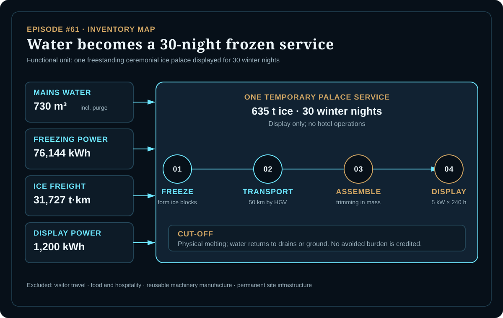
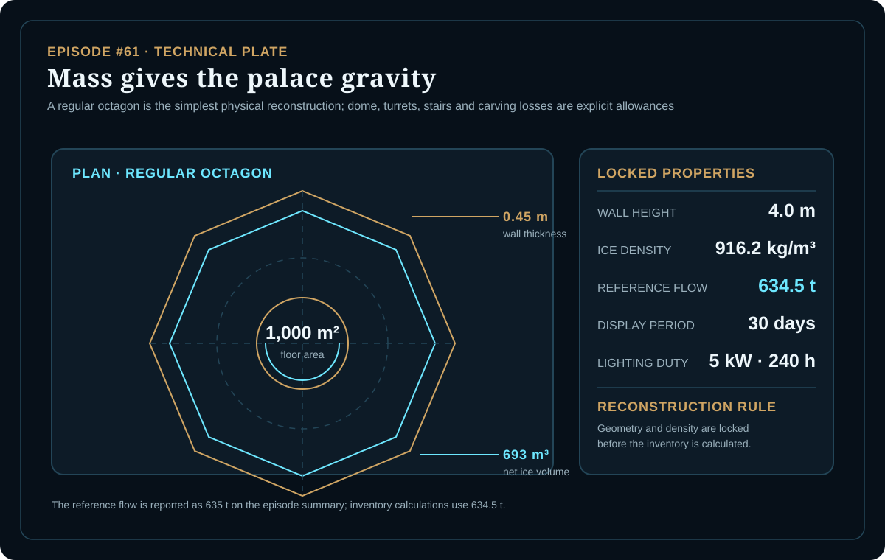
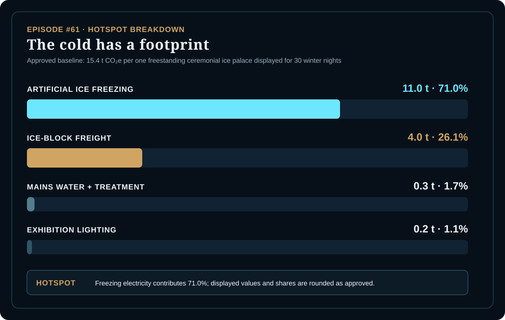

EPISODE #61 · MYTHS & LEGENDS
The Ice Palace
What is the climate footprint of a 635 t ceremonial ice palace that stands for 30 winter nights and then melts?
THE SUBJECT
A frozen wonder becomes a temporary engineering system.
The approved episode treats the palace as a temporary structure rather than a fairytale artifact: 634.5 t of artificial ice blocks are installed as one winter exhibition space, lit for 240 hours across a 30-day display and then allowed to melt.
The boundary begins with mains water, continues through artificial freezing, ice-block freight, assembly and trimming, and includes exhibition lighting. It ends when the palace melts and the water returns to drains or ground. Visitor travel, food and hospitality, reusable machinery manufacture and permanent site infrastructure are excluded; no avoided burden is credited for melting.
Physical reconstruction
1,000 m² floor area, 4.0 m wall height, 0.45 m wall thickness and 693 m³ net ice volume.
Reference flow
634.5 t of ice at 916.2 kg/m³, reported as 635 t of blocks installed on site.
Main hotspot
Artificial ice freezing contributes 11.0 t CO₂e, or 71.0% of the baseline.
Model controls
Ice mass and freezing intensity are tested separately; both materially change the result.
VISUAL MODEL
Water becomes architecture
The inventory map follows the four quantified flows into one temporary exhibition service; the technical plate records the geometry and mass locked before calculation.


DETAILED LIFE CYCLE INVENTORY
The frozen service ledger
The four displayed contributions are rounded individually. The factor-precision calculation supports the approved 15.4 t CO₂e baseline.
| Stage | Component / activity | Activity data | Climate change | Modelling basis |
|---|---|---|---|---|
| Water service | Mains water supply and treatment | 730 m³ | 0.3 t CO₂e | Ice mass × 1.15 purge factor; DEFRA 2026 water-supply factor 0.19130 and water-treatment factor 0.17088 kg CO₂e/m³. |
| Ice formation | Artificial ice freezing | 76,144 kWh | 11.0 t CO₂e | 634.5 t × 120 kWh/t commercial ice-maker benchmark; UK electricity consumed factor 0.14395 kg CO₂e/kWh. |
| Logistics | Ice-block HGV freight | 31,727 t·km | 4.0 t CO₂e | 634.5 t × 50 km; DEFRA 2026 HGV freight total factor 0.12715 kg CO₂e/t·km. |
| Display | Exhibition lighting | 1,200 kWh | 0.2 t CO₂e | 5 kW × 240 h; UK electricity consumed factor 0.14395 kg CO₂e/kWh. |
| Approved baseline total | 15.4 t CO₂e | Per one freestanding ceremonial ice palace displayed for 30 winter nights. | ||
Included
Mains water, artificial freezing, ice-block freight, assembly and trimming, and lighting during the display.
Excluded
Visitor travel, food and hospitality, reusable machinery manufacture and permanent site infrastructure.
Cut-off event
The model ends when the palace melts and its water returns to drains or ground.
Accounting rule
Melting receives no avoided burden. The palace is not treated as a reusable material stock.
HOTSPOT
Cold is the hidden engine
Artificial ice freezing contributes 71.0% of the approved baseline. Freight contributes 26.1%; water and exhibition lighting remain minor.

Main result
15.4 t CO₂e
Per one palace displayed for 30 winter nights.
Artificial freezing
11.0 t CO₂e · 71.0%
The dominant physical transformation.
Ice freight
4.0 t CO₂e · 26.1%
Moving 635 t of blocks for 50 km.
Water + lighting
0.3 + 0.2 t CO₂e
Minor beside freezing and freight.
Ice-mass sensitivity
508 t → 12.4 t CO₂e
635 t baseline → 15.4 t CO₂e
761 t → 18.5 t CO₂e
Freight, water and freezing energy scale with mass; lighting remains fixed.
Mass interpretation
The same design becomes lighter or heavier by changing only the physical ice mass. A ±20% change moves the footprint by about ±3.0 t CO₂e.
Freezing-intensity sensitivity
90 kWh/t → 12.7 t CO₂e
120 kWh/t baseline → 15.4 t CO₂e
180 kWh/t → 20.9 t CO₂e
Ice mass, distance, water and lighting are held constant.
Intensity interpretation
The freezing benchmark changes the result more strongly than the mass test at the stressed end. Electricity remains the dominant modelling and physical driver.
Data status
The model is an engineered estimate and narrative proxy. DEFRA 2026 represents the quantified UK flows; freezing intensity comes from commercial ice-maker benchmarks.
Boundary interpretation
The palace is a 30-night display service, not a permanent building or hotel. Physical melting ends the model without an avoided-production credit.
THE VERDICT
A frozen palace is temporary.
Cold is its hidden engine.
Freight comes second.
Water remains minor.
The palace melts quickly; its electricity remains in the ledger.